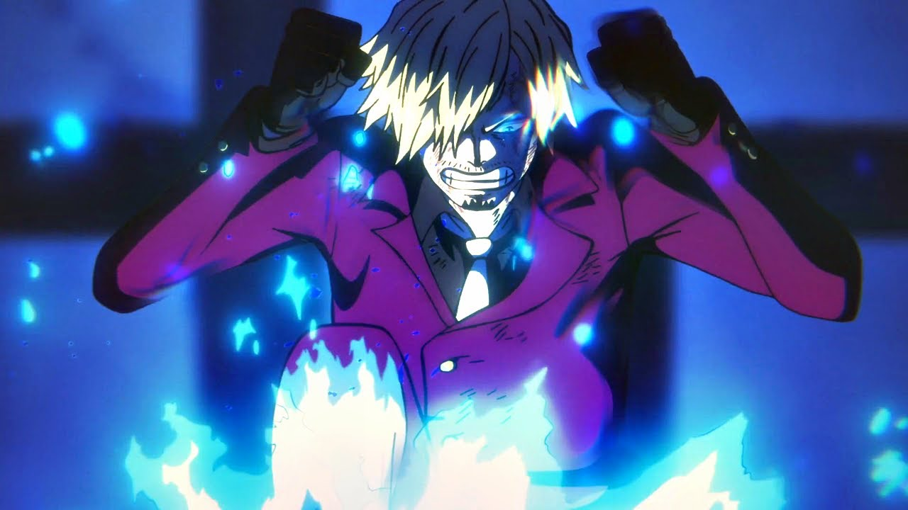

VINSMOKE SANJI PERNA NEGRA

Nome: Kanji: Recompensa: Alcunha:
Vinsmoke Sanji サンジ ฿1,032,000,000 Perna Negra
Sanji é o talentoso cozinheiro e lutador dos Piratas do Chapéu de Palha em One Piece.
Apaixonado pela culinária e por belas mulheres, Sanji é conhecido por sua gentileza, charme e
habilidades extraordinárias na arte marcial do Estilo das Pernas Negras. Ele possui uma ética
forte, se recusando a usar seus punhos em combate para proteger suas mãos, que ele vê como
instrumentos sagrados da culinária. Sanji é um membro valioso da tripulação de Luffy,
contribuindo não apenas com suas habilidades culinárias, mas também com sua determinação
em proteger seus amigos e defender seus ideais.